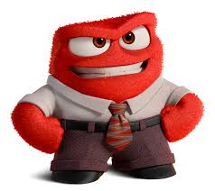
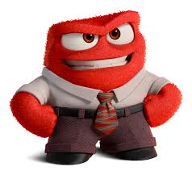

--------Inside Out 2--------

Inside Out 2 is an animated movie directed by Kelsey Mann about the physical manifestations of a girl named Riley's emotions in her head. Now, she enters teenage life as she turns 13 years old, introducing puberty and more emotions into Riley. These new emotions become a problem, forcing Riley to become a new person and adapt to her hockey camp, which presented it's own set of problems. However, the emotions that got overthrown by the newcomers do everything in their power to bring Riley back to herself.
Riley
 Joy
Joy
 Sadness
Anxiety
Embarassment
Sadness
Anxiety
Embarassment
 Ennui
Ennui
 Envy
Disgust
Envy
Disgust
 Anger

Fear
Anger

Fear

Some Movies I also Liked
- Spider Man: Across the Spiderverse
- Despicable Me 1-3
- Cars 1-3
https://www.imdb.com/title/tt22022452/
https://weliveentertainment.com/welivefilm/inside-out-2-review-more-emotions-less-feels/
https://disney.fandom.com/wiki/Riley_Andersen
https://www.disney.ph/movies/inside-out-2
https://insideout.fandom.com/wiki/Anger
https://www.thenationalnews.com/arts-culture/2024/03/27/inside-out-2-ennui/
https://www.pinterest.com/pin/envy--573434965072645576/